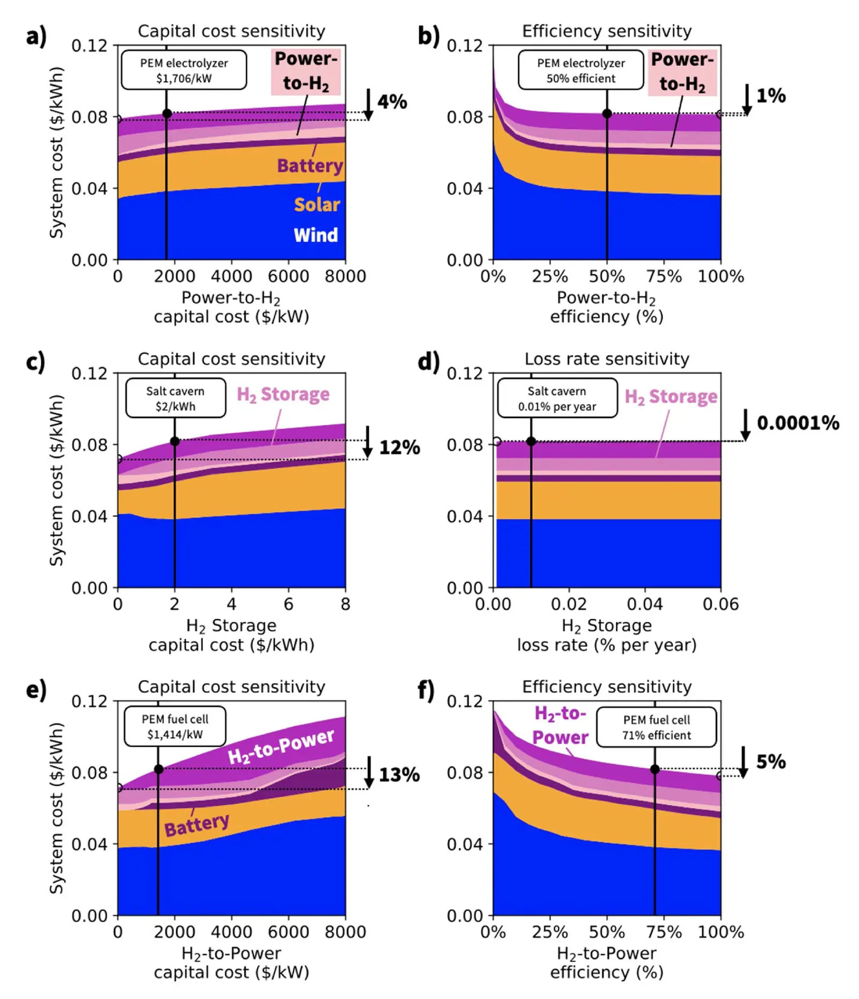

Opportunities and constraints of hydrogen energy storage systems
Key finding. In least-cost wind-solar-battery systems at current costs, hydrogen storage enters the solution despite its low round-trip efficiency, and system cost is insensitive to how efficiently otherwise-curtailed power is used but sensitive to the capital cost of the discharge component — efficiency only becomes important after capital costs fall.

What question did this research address?
Batteries force one decision: how much storage to buy. Power-to-hydrogen-to-power systems separate three — the charging equipment, the store itself, and the discharging equipment — each of which can be sized and improved independently.
That raises a research-priority question. Hydrogen storage has poor round-trip efficiency, so improving efficiency looks like the obvious target. This paper asked whether efficiency or capital cost is the thing actually holding it back in electricity systems dominated by wind and solar.
What did we find?
At current costs and current round-trip efficiencies, least-cost wind and solar systems carry large amounts of excess generating capacity, and hydrogen storage is part of the least-cost solution even so.
Efficiency does not bind while power is abundant. When there is plenty of otherwise-curtailed generation to charge with, wasting some of it costs little, so system cost barely responds to round-trip efficiency.
What system cost does respond to is the capital cost of the discharge component — the equipment that turns stored hydrogen back into electricity, which sits idle most of the time and so is expensive per unit of energy delivered.
The priority inverts once costs come down. If charging and discharging capital costs fall relative to generation costs, the system stops overbuilding, curtailment shrinks, and system cost becomes increasingly sensitive to round-trip efficiency instead.
Storage volume is not the constraint in the United States. Analysis of underground salt cavern limits under wind and solar scenarios indicates ample capacity could be had by repurposing the depleted natural gas reservoirs already used for seasonal gas storage.
Why does it matter?
It tells a research programme where to aim. Round-trip efficiency is the intuitive figure of merit for a storage technology, and in this setting it is the wrong one — cheaper discharge hardware buys more than a more efficient cycle does.
The ordering matters as much as the answer: efficiency is not unimportant, it is *not yet* important. Improving it before capital costs fall targets a constraint that is not binding.
Finding that existing depleted gas reservoirs could hold the hydrogen removes what is often assumed to be a hard geological limit, and moves the question back to the cost of the equipment at either end.
Citation
Jacqueline A. Dowling, Tyler H. Ruggles, Edgar A. Virgüez, Natasha D. Reich, Zachary P. Ifkovits, Steven J. Davis, Anna X. Li, Kathleen M. Kennedy, Katherine Z. Rinaldi, Lei Duan, Ken Caldeira, and Nathan S. Lewis (2024). Opportunities and constraints of hydrogen energy storage systems. Environmental Research: Energy 1, 035004.
Related
- What does a reliable electricity system built on wind and solar actually need?
- Role of long-duration energy storage in variable renewable electricity systems (Dowling et al., 2020)
- The influence of regional geophysical resource variability on the value of single- and multistorage technology portfolios (Li et al., 2024)
- Utilizing curtailed wind and solar power to scale up electrolytic hydrogen production in Europe (Ganter et al., 2025)
- Effects of deep reductions in energy storage costs on highly reliable wind and solar electricity systems (Tong et al., 2020)